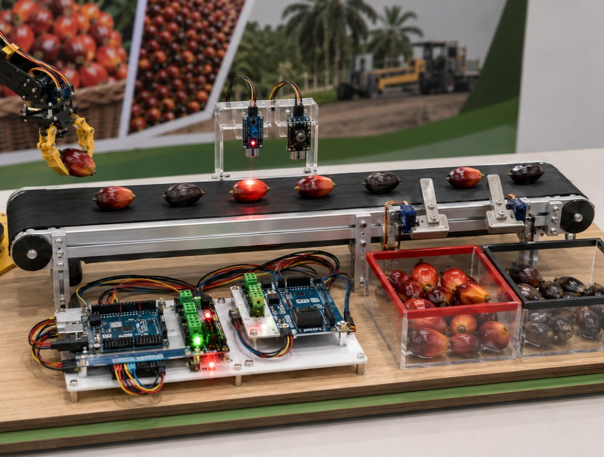
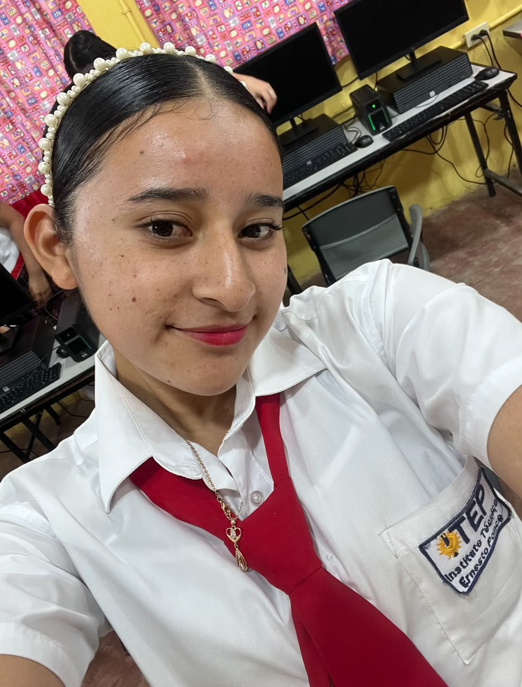
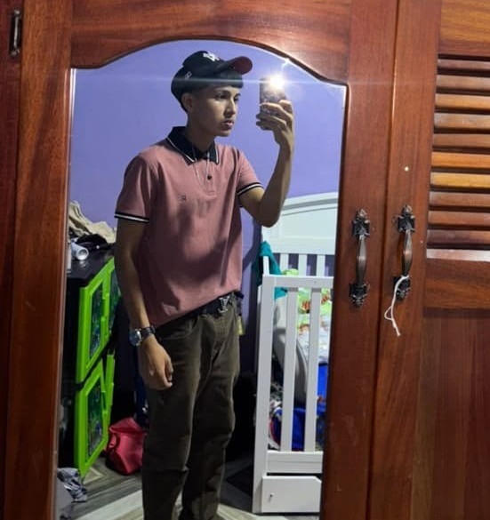

01
Investigar
Investigar los componentes, tecnologías y principios necesarios para desarrollar el proyecto.
Feria Científica 2026
Conoce cómo construimos nuestro proyecto, los materiales utilizados, el procedimiento, la programación y la galería de fotografías tomadas durante la feria.
INICIAR RECORRIDOComponentes
Líneas de Código
Días de Desarrollo
En AGROARCADE establecimos diferentes objetivos para orientar el desarrollo, construcción y presentación de nuestro proyecto.
Diseñar y construir AGROARCADE integrando programación, electrónica, automatización y creatividad para desarrollar un proyecto funcional que pueda ser presentado y demostrado durante la Feria Científica.
Investigar los componentes, tecnologías y principios necesarios para desarrollar el proyecto.
Diseñar una estructura que permita integrar los diferentes componentes de manera organizada y funcional.
Desarrollar el código necesario para controlar y coordinar el funcionamiento del proyecto.
Construir y ensamblar el prototipo utilizando los materiales y componentes seleccionados.
Realizar pruebas para comprobar el funcionamiento del sistema y corregir posibles errores.
Presentar el resultado final y explicar el proceso de desarrollo durante la Feria Científica.
AGROARCADE reúne dos proyectos tecnológicos desarrollados por nuestro equipo para la Feria Científica: una máquina Arcade y una banda transportadora automatizada llamada Palmabot.
 PROYECTO 01
PROYECTO 01
Una máquina de arcade con una garra robótica articulada controlada mediante Arduino y un joystick, diseñada para sujetar objetos livianos y trasladarlos hasta una zona de entrega.
Conocer proyecto → PROYECTO 02
PROYECTO 02
Palmabot Industrial es un prototipo de clasificación automatizada que utiliza una cinta transportadora, sensores y un mecanismo de separación para transportar, detectar, analizar y clasificar muestras.
Conocer proyecto →
Nuestro proyecto principal consiste en una máquina de arcade que utiliza una garra robótica articulada controlada mediante Arduino.
El visitante puede dirigir el mecanismo utilizando un joystick, mover la garra hasta un objeto liviano, sujetarlo y trasladarlo hasta una zona de entrega. De esta manera, el proyecto integra programación, electrónica, control de servomotores y coordinación de movimientos.
La estructura tipo arcade permite mantener el brazo, los objetos y el cableado dentro de un espacio visible y organizado, al mismo tiempo que proporciona una presentación atractiva para los visitantes.

Palmabot Industrial es un prototipo educativo de clasificación automatizada inspirado en procesos relacionados con la agroindustria de la palma aceitera.
El sistema transporta una muestra liviana mediante una cinta transportadora, detecta su presencia, analiza su color y dirige la muestra hacia uno de dos recipientes según los valores programados.
Para realizar este proceso se integran un Arduino, un sensor infrarrojo FC-51, un sensor de color TCS3200, un motorreductor de 12 voltios y un servomotor MG996R encargado de mover la compuerta de clasificación.
Para desarrollar AGROARCADE integramos diferentes tecnologías, componentes electrónicos y herramientas de programación. Cada elemento cumple una función específica en el desarrollo de Arcade Game y Palmabot Industrial.
Utilizado como el controlador principal del proyecto para programar y controlar los diferentes componentes electrónicos.
HARDWARELenguaje utilizado para desarrollar el código encargado de controlar el funcionamiento del proyecto.
PROGRAMACIÓNIntegramos cables, sensores, LEDs, resistencias y otros componentes electrónicos para construir el sistema.
ELECTRÓNICAEl diseño de la estructura y la presentación visual permiten convertir el proyecto en una experiencia atractiva para los visitantes.
CREATIVIDADLa programación permite establecer las instrucciones que debe seguir el sistema para responder a las diferentes acciones.
SOFTWARELa automatización permite que diferentes procesos se ejecuten de manera controlada sin necesidad de realizar cada acción manualmente.
INNOVACIÓNPara construir Agroarcade fue necesario seleccionar diferentes materiales y componentes. Cada uno cumple una función específica dentro del funcionamiento y la estructura del proyecto.
 01
01
Placa utilizada como unidad de control para ejecutar el programa y coordinar los diferentes componentes del proyecto.
 02
02
Utilizada para realizar las conexiones entre los diferentes componentes electrónicos sin necesidad de soldarlos permanentemente.
 03
03
Permiten realizar las conexiones eléctricas entre Arduino, sensores, LEDs y los demás componentes del circuito.
 04
04
Componentes utilizados para proporcionar indicadores luminosos y representar diferentes estados del sistema.
 05
05
Componentes encargados de detectar diferentes condiciones o acciones para permitir que el sistema responda de acuerdo con la programación.
 06
06
Materiales utilizados para construir y decorar la estructura física donde se integran los componentes del proyecto.
El desarrollo de Agroarcade se realizó mediante diferentes etapas. Cada una fue necesaria para convertir nuestra idea inicial en un proyecto funcional.
Primero analizamos la idea del proyecto, definimos qué queríamos construir y establecimos los objetivos que queríamos alcanzar.
Realizamos bocetos y definimos la estructura, los componentes necesarios y la forma en que funcionaría cada parte del proyecto.
Construimos la estructura física y comenzamos a integrar los componentes electrónicos, realizando las conexiones necesarias.
Desarrollamos el código encargado de controlar los componentes y establecimos las instrucciones que debe seguir el sistema.
Realizamos diferentes pruebas para detectar errores, comprobar las conexiones y mejorar el funcionamiento del proyecto.
Finalmente presentamos nuestro proyecto terminado y documentamos el proceso mediante fotografías y videos durante la feria científica.
La programación es una parte fundamental de Agroarcade. En esta sección documentamos el código utilizado para controlar el funcionamiento del proyecto.
/*
* TECH FACTORY ARCADE
* Código principal del proyecto
*
* Este código será reemplazado
* por el código real utilizado
* durante la construcción.
*/
// Componentes
// Aquí declararemos los componentes.
// Configuración inicial
void setup() {
// Código de configuración
}
// Programa principal
void loop() {
// Código principal del proyecto
}AGROARCADE fue desarrollado gracias al trabajo colaborativo de nuestro equipo. Cada integrante aportó sus habilidades, ideas y esfuerzo para convertir nuestra propuesta en un proyecto real.
Responsable de desarrollar y organizar el código utilizado en el proyecto.
Encargado de realizar las conexiones y trabajar con los componentes electrónicos.
Responsable de apoyar en el diseño, estructura y presentación visual del proyecto.
Encargado de documentar el proceso, recopilar información y organizar el contenido.
Responsable de tomar fotografías y registrar los momentos importantes durante la feria.

06Encargado de coordinar las diferentes tareas y apoyar en el desarrollo general del proyecto.
Descripción de la función que realizó dentro del proyecto AGROARCADE.
Descripción de la función que realizó dentro del proyecto AGROARCADE.

09Descripción de la función que realizó dentro del proyecto AGROARCADE.